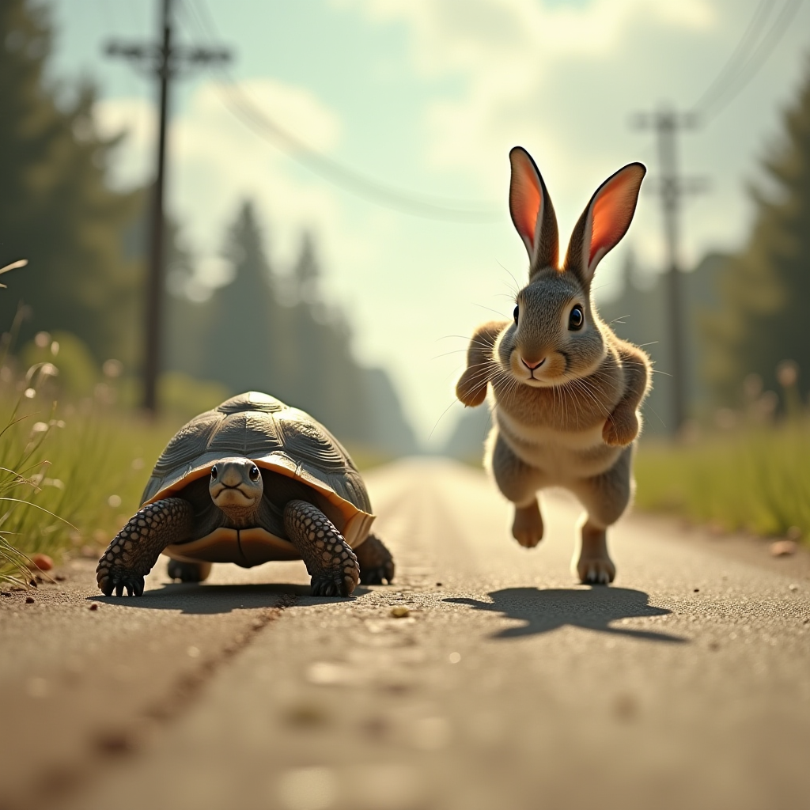

故事概要
兔子和乌龟进行赛跑的比赛。兔子认为自己跑得非常快，毫无疑问会赢得比赛，于是他一路上快速跑去。途中，兔子感到自己领先太多，便轻松地躺下来休息，心想反正乌龟不可能赶上自己。然而，乌龟尽管跑得慢，却一步一个脚印，坚持不懈地向前迈进。兔子在睡觉时，乌龟依然坚持跑步，最终稳步超过了兔子，先到达终点，赢得了比赛。
关键故事点
- 开始比赛: 兔子和乌龟开始了赛跑，兔子满怀信心，而乌龟则以稳健的步伐起跑。
- 兔子超越乌龟: 兔子跑得非常快，远远超过了乌龟，感到自己稳操胜券。
- 兔子休息: 兔子认为乌龟不可能赶上自己，于是在途中停下来休息，甚至睡着了。
- 乌龟坚持跑步: 乌龟虽然慢，但一直坚持不懈地跑步，始终没有停下来。
- 乌龟超越兔子: 乌龟稳步前进，最终在兔子睡觉时超越了兔子，赶在兔子之前到达终点。
- 乌龟赢得比赛: 最终，乌龟凭借着坚持和毅力，赢得了比赛，而兔子则因为轻敌和懒惰错失了胜利。
生成的文生图
生成文生图的过程：
1. 首先，将故事内容通过AI模型输入，确保输入包括了兔子与乌龟的对比，重点突出兔子的轻敌与乌龟的坚持。
2. 然后，模型将生成反映这种情节的画面，突出兔子轻松休息与乌龟不懈努力的反差。
3. 最后，生成的图像将会展示这两种截然不同的场景，完美地诠释故事的核心主题。